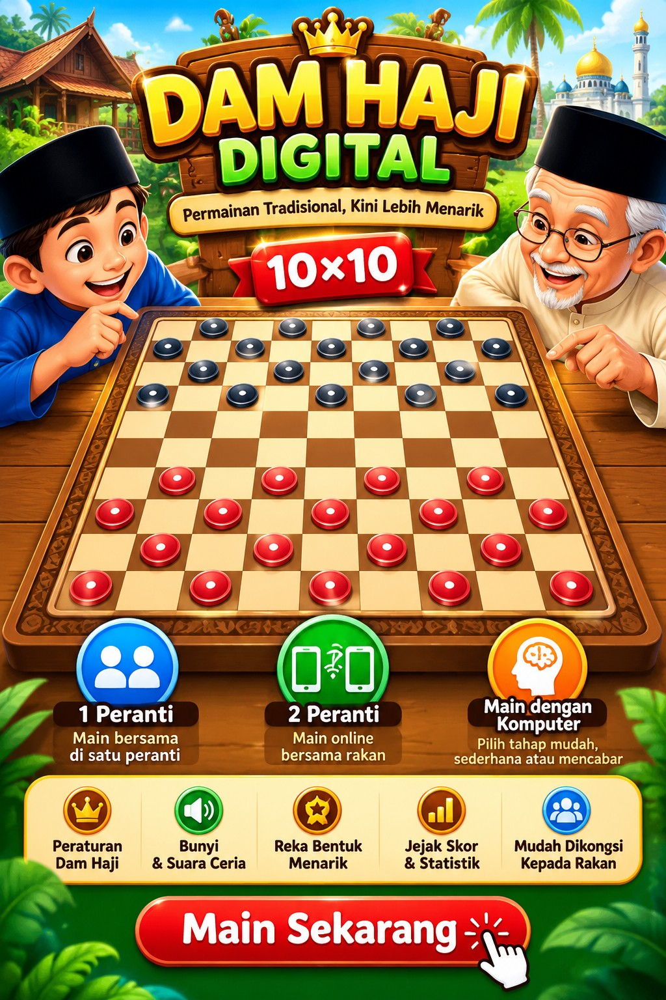

Pilih Cara Bermain
Pilih cara bermain
Buah biasa bergerak dan makan secara menyerong ke hadapan. Buah Haji boleh bergerak jauh secara menyerong dan menegak. Makan tidak diwajibkan.

Permainan Tradisional, Kini Lebih Menarik
Buah biasa bergerak dan makan secara menyerong ke hadapan. Buah Haji boleh bergerak jauh secara menyerong dan menegak. Makan tidak diwajibkan.